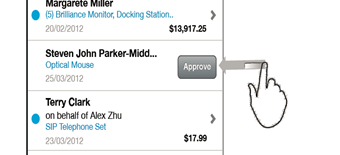

If a user swipes left on a list item within a list or table, you can bring in a control, for example a button, to initiate an action for this item. The button is displayed on the right-hand side of the list item. An example is shown in the following graphic:
